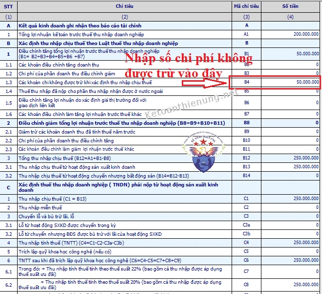

Cách hạch toán chi phí không hợp lý, chi phí không hợp lệ; Cách xử lý chi phí không được trừ khi tính thuế TNDN như thế nào? Kế toán Diệu Tâm xin hướng dẫn cách xử lý, hạch toán các khoản chi phí không được trừ khi lập Tờ khai quyết toán thuế TNDN cuối năm.
Theo chế độ kế toán tại Thông tư 99/2025/TT-BTC (áp dụng từ ngày 01/01/2026 thay thế Thông tư 200/2014/TT-BTC) thì:
NGUYÊN TẮC KẾ TOÁN CÁC KHOẢN CHI PHÍ
5. Các khoản chi phí không được coi là chi phí tính thuế TNDN theo quy định pháp luật về thuế nhưng có đầy đủ hóa đơn chứng từ và đã hạch toán đúng theo Chế độ kế toán thì không được ghi giảm chi phí kế toán mà chỉ điều chỉnh trong quyết toán thuế TNDN để làm tăng số thuế TNDN phải nộp.
TÀI KHOẢN 632 - GIÁ VỐN HÀNG BÁN
1. Nguyên tắc kế toán
g) Các khoản chi phí không được coi là chi phí tính thuế TNDN theo quy định của Luật thuế nhưng có đầy đủ hóa đơn chứng từ và đã hạch toán đúng theo Chế độ kế toán thì không được ghi giảm chi phí kế toán mà chỉ điều chỉnh trong quyết toán thuế TNDN để làm tăng số thuế TNDN phải nộp.
TÀI KHOẢN 641 - CHI PHÍ BÁN HÀNG
1. Nguyên tắc kế toán
b) Các khoản chi phí bán hàng không được coi là chi phí tính thuế TNDN theo quy định của Luật thuế nhưng có đầy đủ hóa đơn chứng từ và đã hạch toán đúng theo Chế độ kế toán thì không được ghi giảm chi phí kế toán mà chỉ điều chỉnh trong quyết toán thuế TNDN để làm tăng số thuế TNDN phải nộp.
TÀI KHOẢN 642 - CHI PHÍ QUẢN LÝ DOANH NGHIỆP
1. Nguyên tắc kế toán
b) Các khoản chi phí quản lý doanh nghiệp không được coi là chi phí tính thuế TNDN theo quy định của Luật thuế nhưng có đầy đủ hóa đơn chứng từ và đã hạch toán đúng theo Chế độ kế toán thì không được ghi giảm chi phí kế toán mà chỉ điều chỉnh trong quyết toán thuế TNDN để làm tăng số thuế TNDN phải nộp.
TÀI KHOẢN 811 - CHI PHÍ KHÁC
1. Nguyên tắc kế toán
b) Các khoản chi phí không được coi là chi phí tính thuế TNDN theo quy định của Luật thuế nhưng có đầy đủ hóa đơn chứng từ và đã hạch toán đúng theo Chế độ kế toán thì không được ghi giảm chi phí kế toán mà chỉ điều chỉnh trong quyết toán thuế TNDN để làm tăng số thuế TNDN phải nộp.
===============================================
Theo chế độ kế toán tại Thông tư 133/2016/TT-BTC thì:
Điều 59. Nguyên tắc kế toán chi phí
4. Các khoản chi phí không được coi là chi phí được trừ theo quy định của Luật thuế TNDN nhưng có đầy đủ hóa đơn chứng từ và đã hạch toán đúng theo Chế độ kế toán thì không được ghi giảm chi phí kế toán mà chỉ điều chỉnh trong quyết toán thuế TNDN để làm tăng số thuế TNDN phải nộp.
Điều 62. Tài khoản 632 - Giá vốn hàng bán
1. Nguyên tắc kế toán
e) Các khoản chi phí không được coi là chi phí được trừ theo quy định của Luật thuế TNDN nhưng có đầy đủ hóa đơn chứng từ và đã hạch toán đúng theo Chế độ kế toán thì không được ghi giảm chi phí kế toán mà chỉ điều chỉnh trong quyết toán thuế TNDN để làm tăng số thuế TNDN phải nộp.
Điều 64. Tài khoản 642 - Chi phí quản lý kinh doanh
1. Nguyên tắc kế toán
1.2. Các khoản chi phí bán hàng, chi phí quản lý doanh nghiệp không được coi là chi phí được trừ theo quy định của Luật thuế TNDN nhưng có đầy đủ hóa đơn chứng từ và đã hạch toán đúng theo Chế độ kế toán thì không được ghi giảm chi phí kế toán mà chỉ điều chỉnh trong quyết toán thuế TNDN để làm tăng số thuế TNDN phải nộp.
Điều 66. Tài khoản 811 - Chi phí khác
1. Nguyên tắc kế toán
b) Các khoản chi phí không được coi là chi phí được trừ theo quy định của Luật thuế TNDN nhưng có đầy đủ hóa đơn chứng từ và đã hạch toán đúng theo Chế độ kế toán thì không được ghi giảm chi phí kế toán mà chỉ điều chỉnh trong quyết toán thuế TNDN để làm tăng số thuế TNDN phải nộp.
====================
Chi tiết xác định các bạn xem tại đây:
- Việc thứ hai các bạn cần quan tâm là các bạn cần phải biết: CHI PHÍ KẾ TOÁN và CHI PHÍ TÍNH THUẾ là 2 khoản chi phí khác nhau.
+ Chi phí kế toán là áp dụng theo luật kế toán để hạch toán vào sổ sách kế toán.
+ Chi phí tính thuế là áp dụng theo luật thuế thu nhập doanh nghiệp để tính thuế TNDN.
-----------------------------------------------------------------
Các bạn có thể hiểu nôm na:- Khi phát sinh các khoản chi phí thì các bạn phải HẠCH TOÁN PHẢN ÁNH VÀO SỔ SÁCH theo Luật kế toán, chuẩn mực kế toán (dù chi phí đó có được trừ hay không thì vẫn phải hạch toán như bình thường) -> Đó là các khoản chi phí kế toán.
- Còn khi tính thuế TNDN thì các bạn phải xác định xem các khoản chi phí đó có đủ điều kiện để đưa vào chi phí hợp lý khi tính thuế TNDN hay không (Phải áp dụng theo Luật thuế TNDN).
- Ngoài thực tế có rất nhiều các bạn kế toán khi biết các khoản chi phí đó không được trừ khi tính thuế TNDN, thì các bạn đã xử lý bằng cách: “KHÔNG HẠCH TOÁN SỐ SÁCH” của Doanh nghiệp => Dẫn đến việc không khớp được các sổ, không khớp với công nợ … -> Như vậy là Báo cáo tài chính BỊ SAI (Báo cáo không phản ánh đúng tình hình hoạt động sản xuất kinh doanh của Doanh nghiệp).
- Trong bài viết này Kế toán Diệu Tâm sẽ đưa ra một vài khoản chi phí không được trừ khi tính thuế TNDN mà các bạn hay gặp phải, và hướng dẫn cách hạch toán chi phí không hợp lý đó, xử lý khi Quyết toán thuế đối với những khoản chi phí đó.
-----------------------------------------------------------------
I, Cách hạch toán chi phí không được trừ:
- Khoản chi thực tế phát sinh liên quan đến hoạt động sản xuất, kinh doanh của doanh nghiệp.
- Khoản chi có đủ hoá đơn, chứng từ hợp pháp theo quy định của pháp luật.
- Khoản chi có chứng từ thanh toán không dùng tiền mặt đối với trường hợp mua hàng hóa, dịch vụ và các khoản thanh toán khác từng lần có giá trị từ 05 triệu đồng trở lên.
Ví dụ: Thuê dịch vụ vận chuyển của Công ty A để bán hàng, nhận được hóa đơn GTGT, Tổng giá trị của hóa đơn là 6.000.000 nhưng lại thanh toán bằng tiền mặt -> Tức là cũng không đủ điều kiện để đưa vào chi phí được trừ khi tính thuế TNDN.
- Theo chế độ kế toán:
Hạch toán vào sổ sách theo số thực tế đã chi:
Nợ TK 641…: 6.000.000
Có TK 111: 6.000.000
Và kết chuyển lên tài khoản 911 để xác định kết quả kinh doanh
Nợ TK 911: 6.000.000
Có TK 641 : 6.000.000
- Theo Luật thuế: Không được tính vào chi phí được trừ khi tính thuế TNDN (vì khoản chi mua dịch vụ này có giá trị từ 5 triệu đồng trở lên nhưng lại không có chứng từ thanh toán không dùng tiền mặt)Nợ TK 641…: 6.000.000
Có TK 111: 6.000.000
Và kết chuyển lên tài khoản 911 để xác định kết quả kinh doanh
Nợ TK 911: 6.000.000
Có TK 641 : 6.000.000
=> Đây là SỰ KHÁC BIỆT GIỮA LUẬT KẾ TOÁN và LUẬT THUẾ => Xử lý: Các bạn vẫn phải hạch toán chi phí không được trừ đó vào sổ sách như trên -> Nhưng cuối năm khi lập Tờ khai Quyết toán thuế 03/TNDN, thì các bạn nhập số tiền đó vào Chỉ tiêu B4 (Hướng dẫn chi tiết cuối bài viết).
Xem thêm: Cách xử lý chi phí không có hóa đơn
---------------------------------------------------------------------
Ví dụ: Công ty bạn hoạt động trong lĩnh vực dịch vụ kế toán (Không kinh doanh vận tải hành khách, kinh doanh du lịch, khách sạn; ô tô dùng để làm mẫu và lái thử cho kinh doanh ô tô), có mua 1 ô tô 4 chỗ ngồi trị giá 2 tỷ, thuế GTGT 10%.
- Theo quy định tại thông tư 45/2013/TT-BTC, tài sản này trích khấu hao từ 6-10 năm.
- Giám đốc Công ty quyết định trích khấu hao Tài sản này trong 8 năm.
=> Các bạn xử lý như thế nào trong trường hợp này?
- Theo chế độ kế toán: Hạch toán và ghi nhận theo thực tế:
Nợ TK 211: 2.000.000.000 + 40.000.000 = 2.040.000.000 (số thuế GTGT đầu vào tương ứng với phần trị giá vượt trên 1,6 tỷ đồng không được khấu trừ là 40.000.000 cộng vào nguyên giá của TSCĐ)
Nợ TK 133: 160.000.000 (Chỉ được khấu trừ thuế GTGT phần tương ứng với 1,6 tỷ, tức là 160 tr, còn 40 tr tiền thuế GTGT thì cho vào Nguyên giá của TSCĐ)
Có TK 331: 2.200.000.000
Hàng năm, trích khấu hao TSCĐ theo phương pháp đường thẳng
Mức khấu hao năm = 2.040.000.000 / 8 = 255.000.000
Hạch toán chi phí khấu hao hàng nămNợ TK 642: 255.000.000 (tùy theo bộ phận nhé, ví dụ đây là bộ phân quản lý)
Có TK 214: 255.000.000
Và kết chuyển lên tài khoản 911 để xác định kết quả kinh doanh
Nợ TK 911: 255.000.000
Có TK 642: 255.000.000
- Theo Luật thuế: Chỉ được tính vào chi phí hợp lý khi tính thuế TNDN khoản chi phí Phần trích khấu hao tương ứng với nguyên giá 1,6 tỷ đồng/xe.
-> Như vậy các bạn phải tính lại khấu hao (Chỉ tính để tính thuế TNDN thôi nhé, còn hạch toán trên sổ sách rồi thì để nguyên vậy).
Mức khấu hao năm = 1.600.000.000 / 8 = 200.000.000
=> Khấu hao năm theo chế độ kế toán là 255.000.000, theo luật thuế là 200.000.000 => Chênh lệch 55.000.000.
=> Đây là SỰ KHÁC BIỆT GIỮA KẾ TOÁN và THUẾ => Xử lý: Các bạn vẫn phải hạch toán vào sổ sách như trên -> Nhưng cuối năm khi lập Tờ khai Quyết toán thuế 03/TNDN, thì các bạn nhập số tiền 55tr đó vào Chỉ tiêu B4 (Hướng dẫn chi tiết cuối bài viết).
Xem thêm: Xử lý chi phí mua xe ô tô trên 1.6 tỷ
---------------------------------------------------------------------
Ví dụ: Trong năm chi trang phục bằng tiền cho 1 người lao động là 6.000.000đ (vượt quá mức 5tr/năm).
=> Các bạn xử lý như thế nào trong trường hợp này?
- Theo chế độ kế toán:
Khi chi tiền trang phục cho nhân viên, kế toán hạch toán:
Nợ TK 642: 6.000.000
Có TK 112: 6.000.000
Và kết chuyển lên tài khoản 911 để xác định kết quả kinh doanh
Nợ TK 911: 6.000.000
Có TK 642: 6.000.000
Nợ TK 642: 6.000.000
Có TK 112: 6.000.000
Và kết chuyển lên tài khoản 911 để xác định kết quả kinh doanh
Nợ TK 911: 6.000.000
Có TK 642: 6.000.000
- Theo Luật thuế: Chỉ được tính vào chi phí được trừ khi tính thuế TNDN phần chi trang phục bằng tiền trong năm cho 1 người lao động tối đa là 5.000.000 => Chênh lệch = 1.000.000 sẽ không được tính vào làm chi phí được trừ khi tính thuế TNDN
=> Đây là SỰ KHÁC BIỆT GIỮA KẾ TOÁN và THUẾ => Xử lý: Các bạn vẫn phải hạch toán vào sổ sách như trên -> Nhưng cuối năm khi lập Tờ khai Quyết toán thuế 03/TNDN, thì các bạn nhập số tiền 10tr đó vào Chỉ tiêu B4 (Hướng dẫn chi tiết cuối bài viết).
---------------------------------------------------------------------------
- Thù lao trả cho các sáng lập viên, thành viên của hội đồng thành viên, hội đồng quản trị mà những người này không trực tiếp tham gia điều hành sản xuất, kinh doanh.
Ví dụ: Công ty TNHH MTV (do một cá nhân làm chủ), trong tháng có chi lương cho Giám đốc công ty (giám đốc là chủ sở hữu) là 15tr.
=> Các bạn xử lý như thế nào trong trường hợp này?
- Theo chế độ kế toán:
Khi tính lương cho Giám đốc, kế toán hạch toán:
Nợ TK 642: 15.000.000
Có TK 334: 15.000.000
Và kết chuyển lên tài khoản 911 để xác định kết quả kinh doanh
Nợ TK 911: 15.000.000
Có TK 642: 15.000.000
Nợ TK 642: 15.000.000
Có TK 334: 15.000.000
Và kết chuyển lên tài khoản 911 để xác định kết quả kinh doanh
Nợ TK 911: 15.000.000
Có TK 642: 15.000.000
- Theo Luật thuế: Không được tính vào chi phí được trừ 15.000.000đ
=> Đây là SỰ KHÁC BIỆT GIỮA KẾ TOÁN và THUẾ => Xử lý: Các bạn vẫn phải hạch toán vào sổ sách như trên -> Nhưng cuối năm khi lập Tờ khai Quyết toán thuế 03/TNDN, thì các bạn nhập số tiền 150tr đó vào Chỉ tiêu B4 (Hướng dẫn chi tiết cuối bài viết).
Xem thêm: Tiền lương của giám đốc Cty TNHH MTV
--------------------------------------------------------------------
Ví dụ: Công ty bạn bị xử phạt vi phạm hành chính về thuế là 8.000.000, và đã nộp tiền vào ngân sách nhà nước bằng tiền gửi ngân hàng.
=> Các bạn xử lý như thế nào trong trường hợp này?
- Theo chế độ kế toán:
Căn cứ vào quyết định xử phạt vi phạm hành chính, và giấy nộp tiền, hạch toán:
Nợ TK 811: 8.000.000
Có TK 3339: 8.000.000
Nợ TK 3339: 8.000.000
Có TK 112: 8.000.000
Và kết chuyển lên tài khoản 911 để xác định kết quả kinh doanh
Nợ TK 911: 8.000.000
Có TK 811: 8.000.000
=> Theo Luật thuế: Khoản chi này không được tính vào chi phí được trừ
=> Đây là SỰ KHÁC BIỆT GIỮA KẾ TOÁN và THUẾ => Xử lý: Các bạn vẫn phải hạch toán vào sổ sách như trên -> Nhưng cuối năm khi lập Tờ khai Quyết toán thuế 03/TNDN, thì các bạn nhập số tiền 80tr đó vào Chỉ tiêu B4 (Hướng dẫn chi tiết cuối bài viết).
Xem thêm: Cách hạch toán tiền phạt chậm nộp thuế
----------------------------------------------------------------------------
--------------------------------------------------------------------------
II, Cách xử lý chi phí không được trừ khi quyết toán thuế TNDN:
- Là 1 kế toán các bạn phải tự xác định được các khoản chi phí được trừ và không được trừ khi tính thuế TNDN (căn cứ theo Luật thuế thu nhập doanh nghiệp).
-> Sau khi đã xác định được các khoản chi phí không được trừ thì các bạn nên tập hợp những khoản đó vào 1 file Excel để theo dõi.
-> Và đến cuối năm khi lập tờ khai quyết toán thuế 03/TNDN thì sẽ nhập số tiền chi phí đó vào Chỉ tiêu B4 trên tờ khai 03/TNDN.
Kế toán Diệu Tâm xin lấy thêm ví dụ để các bạn hình dung:
Ví dụ: Trong năm,có doanh thu là 500.000.000, chi phí là 300.000.000 (trong đó chi phí không được trừ khi tính thuế TNDN là 50.000.000)
+ Lợi nhuận trước thuế = 500.000.000 – 300.000.000 = 200.000.000
+ Thu nhập chịu thuế = 200.000.000 + 50.000.000 = 250.000.000.
+ Số thuế TNDN phải nộp = 250.000.000 x 20% = 50.00.000 (Xác định trên thu nhập tính thuế)
- Lợi nhuận sau thuế = 200.000.000 - 50.000.000 = 150.000.000
=> Trên tờ khai quyết toán thuế 03/TNDN cuối năm:
-> Các bạn nhập vào Chỉ tiêu [B4] – Các khoản chi không được trừ khi xác định thu nhập chịu thuế: = 50.000.000

----------------------------------------------------------------------------------------------------
Tiếp vấn đề bên trên đầu bài viết: Tôi xin lấy ví dụ để các bạn hiểu rõ hơn:Ví dụ: Trong năm, có doanh thu là 500.000.000, chi phí là 300.000.000 (trong đó chi phí không được trừ khi tính thuế TNDN là 50.000.000).
-> Và các bạn biết 50.000.000 này là chi phí không được trừ nên không hạch toán luôn cho đỡ mệt. Như vậy trên sổ sách chỉ phản ánh chi phí là: 250.000.000
+ Lợi nhuận trước thuế = 500.000.000 – 250.000.000 = 250.000.000
+ Thu nhập tính thuế = 500.000.000 – 250.000.000 = 250.000.000
+ Số thuế TNDN phải nộp = 250.000.000 x 20% = 50.00.000
+ Lợi nhuận sau thuế = 250.000.000 – 50.00.000 = 200.000.000
Như vậy: Các bạn đã nhìn thấy số thuế TNDN phải nộp là như nhau.
-> Nhưng lợi nhuận sau thuế đã tăng lên: Từ 150.000.000 -> 200.000.000 (Đây là trên sổ sách), nhưng thực tế lợi nhuận sau thuế chỉ có: 150.000.000 => Báo cáo tài chính là SAI.
------------------------------------------------------------------
- Khi phát sinh các khoản chi phí dù là chi phí hợp lý hay là chi phí không hợp lý thì các bạn vẫn phải hạch toán và ghi nhận theo đúng thực tế -> Cuối kỳ kết chuyển để lên BCTC.
- Khi lập Tờ khai Quyết toán thuế TNDN thì phải loại các khoản chi phí không được trừ ra. (Tính trên thu nhập chịu thuế chứ không tính trên lợi nhuận trước thuế).
(Nguồn Clb kế toán thuế)
--------------------------------------------------------------------
Kế toán Diệu Tâm xing chúc các bạn thành công!
Kế toán Diệu Tâm xing chúc các bạn thành công!
Các bạn muốn hiểu sâu hơn về các luật thuế GTGT, TNCN, TNDN, cách xác định chi phí được trừ - không được trừ, cách lập tờ khai quyết toán thuế TNCN, TNDN cuối năm, kỹ năng quyết toán thuế.
=> Có thể tham gia: Lớp học thực hành kế toán thuế chuyên sâu.
=> Có thể tham gia: Lớp học thực hành kế toán thuế chuyên sâu.
-------------------------------------------------------------------------------------------------